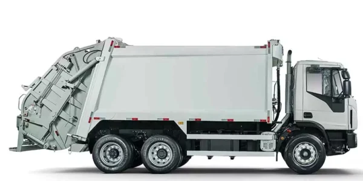

TECTOR 17-320 COLETA
CATEGORIAS: IVECO, CAMINHÕES SEMIPESADOS, VEÍCULOS VOCACIONAIS
O **IVECO Tector 17-320 Coleta** faz parte da renomada linha Tector, reconhecida por transportadores e motoristas pelo seu **baixo custo operacional, potência e conforto**. Com grande versatilidade, este caminhão semipesado é preparado para atender a diversas demandas, desde o varejo até operações vocacionais e serviços públicos.
Com opções de 15 a 31 toneladas (dependendo da versão), o Tector é um caminhão que pode ser adaptado para uma ampla gama de aplicações, incluindo coletas, entregas intermunicipais, urbanas (alimentos, bebidas, cargas perecíveis e fracionadas), além de construção e agronegócio.
Conforto e Qualidade de Vida a Bordo
- **Cabine Projetada:** Design moderno e robusto, com amplo espaço para viagens seguras e tranquilas. Totalmente projetada para a comodidade do motorista.
- **Suspensão Avançada:** Suspensão da cabine com coxim, mola e amortecedor, e nos quatro cantos com molas helicoidais, garantindo uma condução silenciosa e confortável.
- **Ergonomia:** Câmbio integrado ao painel, coluna de direção regulável e **banco do motorista com suspensão pneumática**.
Economia e Desempenho (O Tector é um Negoção)
- **Custo Operacional:** O melhor da categoria, com manutenção preventiva mais em conta, **baixo consumo de combustível** e contrato de manutenção competitivo.
- **Adaptado ao Brasil:** Conhece bem as dificuldades das ruas e estradas brasileiras, combinando com o seu bolso e o seu negócio.
- **Tecnologia:** Conta com computador de bordo para gerenciar várias funções do caminhão e sistema inteligente de direção.